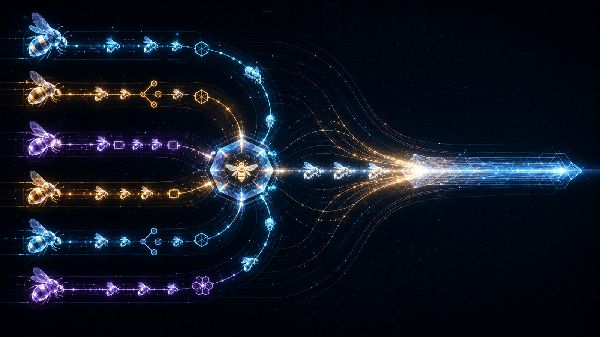

One root holds the desired outcome, authority envelope, budgets, user corrections, and final answer.
Governed multi-agent coordination
Parallel cognition.
One accountable mind.
Agent Swarm Orchestration helps an AI decide whether multiple agents earn their overhead, divide work without write collisions, reconcile reported findings against evidence, and return one coherent result.
Free Collaborative Dynamics Augment · Codex plugin · Claude and standalone skill packages · no account or telemetry

The promise
A swarm should multiply useful cognition—not divide responsibility until nobody owns the truth.
Workers receive coherent responsibilities. Every mutable surface has one writer at a time.
Worker returns remain agent-reported until the root inspects the cited source, artifact, or receipt.
The five operating shapes
Use the smallest topology that improves the accepted result.
- 01Direct
Keep small, sequential, tightly coupled, or shared-surface work with the root.
- 02Enlist
Give one bounded worker one useful slice while the root continues the mission.
- 03Assemble
Run independent, ready slices concurrently under explicit ownership and a named merge plan.
- 04Chain
Accept one specialist's result before using it as the next specialist's exact input.
- 05Recover
Preserve accepted work, change the failed premise, and resume from the first unearned edge.
What it prevents
Coordination theatre is still theatre, even with excellent tool calls.
- spawning workers because slots exist;
- parallel writers colliding on one file;
- dependent work disguised as concurrency;
- private context copied wholesale into every packet;
- agent confidence promoted into observed fact;
- interruption described as rollback;
- cheap token prices described as accepted-outcome savings.
Install
Get the Codex marketplace plugin.
codex plugin marketplace add Stunspot/agent-swarm-orchestration
codex plugin add agent-swarm-orchestration@cd-agent-swarm-orchestrationStart a fresh task, invoke $agent-swarm-orchestration, and give it a task with genuinely independent work. A Direct decision is valid when a swarm would cost more than it contributes.
Trust boundary
Validated runtime. Bounded claims.
The retained runtime fingerprint is 8833af967b1faf2f1b1b92a5eda54129579a995c91965b73883bc1f8272768b5. Validator tests, package parity, portable archive topology, and a ten-case Codex decision qualification support the recorded release boundary.
They do not prove universal reliability, universal cost savings, every future host contract, Claude activation, accessibility conformance, directory approval, or customer outcomes. Read the exact exercised and unexercised surfaces in Trust and limits.